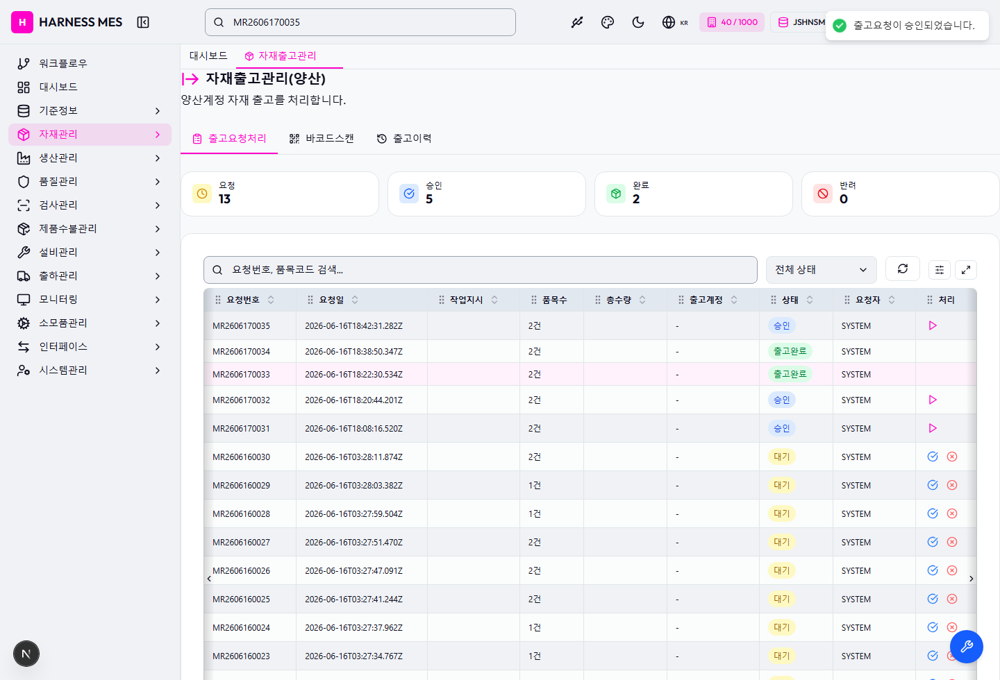
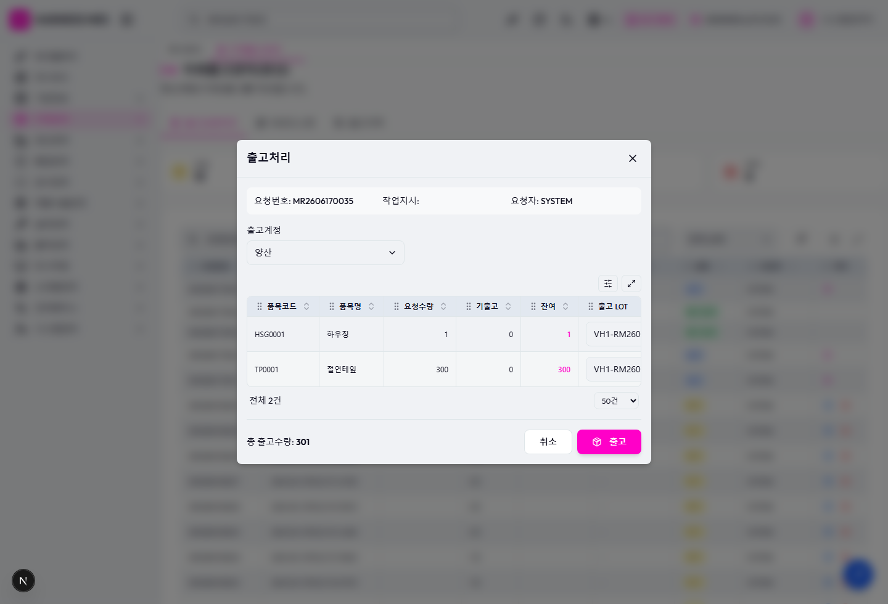
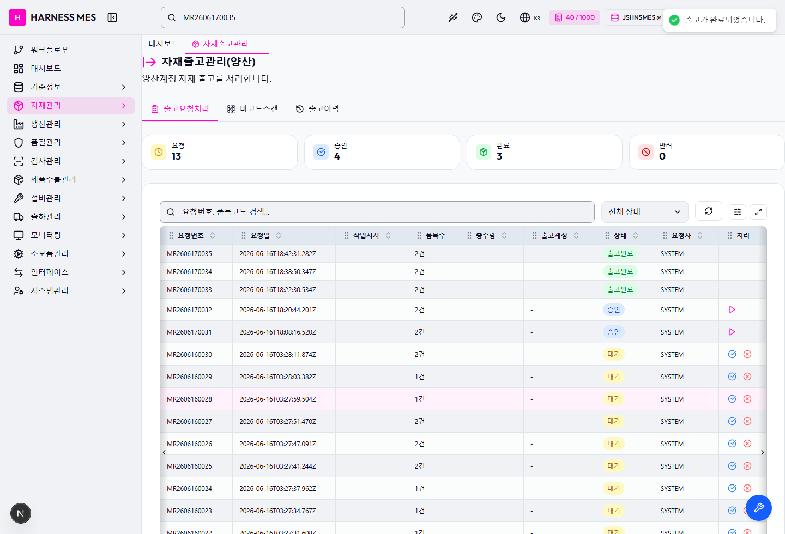
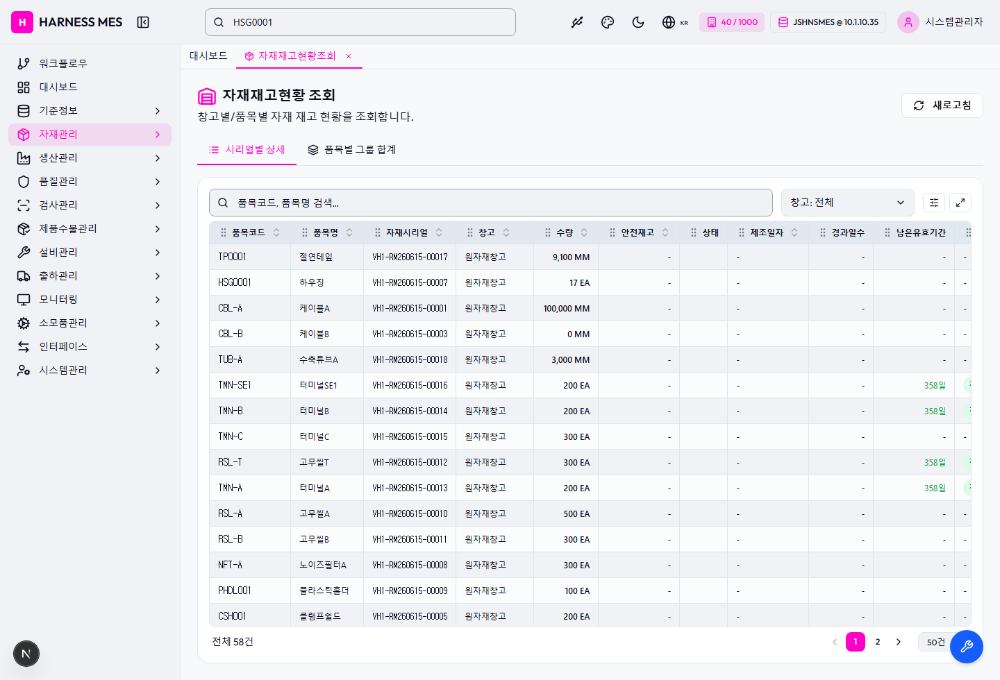
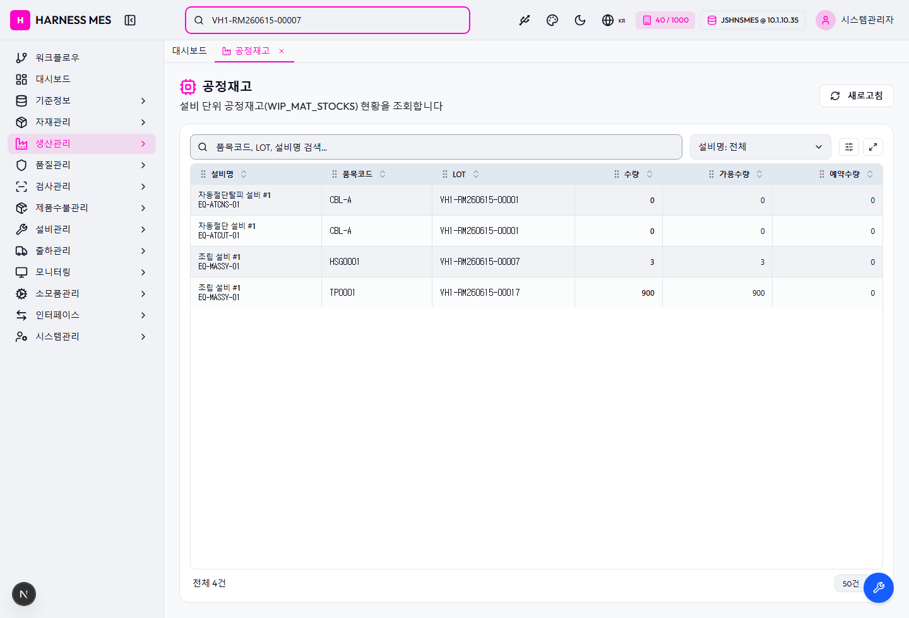
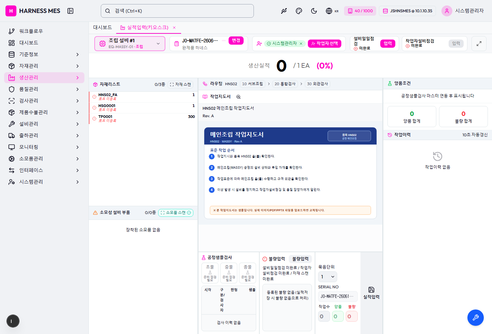

Scenario
| ID | 단계 | 결과 | 오류 |
|---|---|---|---|
| setup | 테스트 작업지시와 가용 LOT 확인 | PASS | |
| ui-request | 프론트 자재요청 생성 | PASS | |
| ui-issue | 프론트 승인 및 출고처리 | PASS | |
| ui-stock-kiosk | 프론트 재고/공정 키오스크 확인 | PASS | |
| db-verify | JSHANES DB 정합성 확인 | PASS |
DB 확인
| 항목 | 결과 | SQL | Rows |
|---|---|---|---|
| 출고요청 COMPLETED | PASS | SELECT COUNT(*) AS CNT FROM MAT_ISSUE_REQUESTS WHERE COMPANY='40' AND PLANT_CD='1000' AND REQUEST_NO='MR2606170035' AND STATUS='COMPLETED' | [
{
"CNT": 1
}
] |
| 출고요청 품목 issuedQty 반영 | PASS | SELECT COUNT(*) AS CNT FROM MAT_ISSUE_REQUEST_ITEMS WHERE COMPANY='40' AND PLANT_CD='1000' AND REQUEST_ID='MR2606170035' AND ISSUED_QTY > 0 | [
{
"CNT": 2
}
] |
| MAT_ISSUES 출고 이력 | PASS | SELECT COUNT(*) AS CNT FROM MAT_ISSUES WHERE COMPANY='40' AND PLANT_CD='1000' AND ORDER_NO='JO-MATFE-26061618422034' AND STATUS='DONE' | [
{
"CNT": 2
}
] |
| WIP_MAT_TRANSACTIONS 공정입고 이력 | PASS | SELECT COUNT(*) AS CNT FROM WIP_MAT_TRANSACTIONS WHERE COMPANY='40' AND PLANT_CD='1000' AND ORDER_NO='JO-MATFE-26061618422034' AND EQUIP_CODE='EQ-MASSY-01' AND TRANS_TYPE='WIP_IN' AND REF_TYPE='MAT_ISSUE' AND ITEM_CODE IN ('HSG0001','TP0001') | [
{
"CNT": 2
}
] |
| 공정재고 WIP_MAT_STOCKS 반영 | PASS | SELECT COUNT(*) AS CNT FROM WIP_MAT_STOCKS WHERE COMPANY='40' AND PLANT_CD='1000' AND EQUIP_CODE='EQ-MASSY-01' AND ((ITEM_CODE='HSG0001' AND MAT_UID='VH1-RM260615-00007' AND QTY >= 1) OR (ITEM_CODE='TP0001' AND MAT_UID='VH1-RM260615-00017' AND QTY >= 300)) | [
{
"CNT": 2
}
] |
스크린샷







